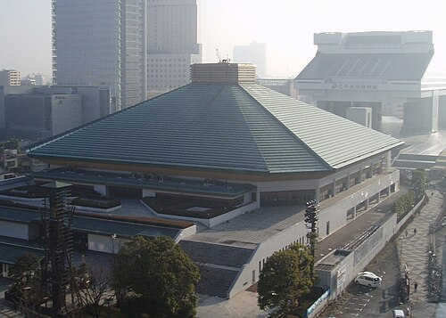
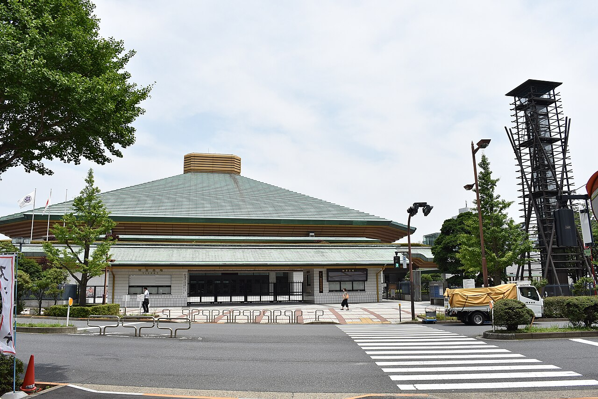
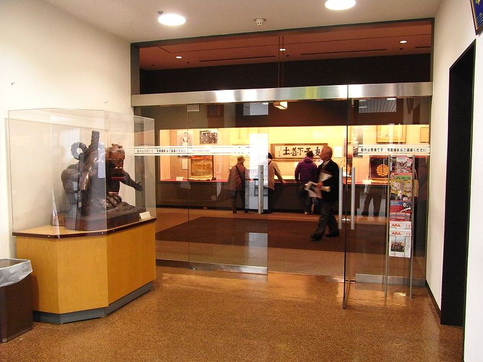

Where is the Ryogoku Kokugikan located?
The Ryogoko Kokugikan, often refered to as the Kokugikan, is located in Tokyo.



The Ryogoko Kokugikan, often refered to as the Kokugikan, is located in Tokyo.

